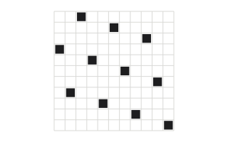

Jaeho Lee
I'm a first-year at MIT. I work on the affine group Aff(ℤn) and panmagic permutations, and on what small neural networks learn when you train them to multiply in a finite group.
This year I'm doing a UROP in the Fiete Lab. Before MIT I wrote two papers with Sergiy Koshkin, listed below, and spent a summer at RSI working on quadratic residues and pseudorandomness.
I also like building things. The most recent is HiveMusic, which turns a room of phones into one speaker.
News
- Built HiveMusic at HackMIT with Frank Lucci.
- Posted cosets vs irreps, a pre-registered study of 89 small networks on 7 finite groups.
- Started a UROP in the Fiete Lab.
Research
-

Cosets vs irrepsPre-registered experiment, 2026In 89 one-hidden-layer MLPs trained on 7 finite groups, neurons mostly organize by subgroup cosets, not by irreducible representations.
-
 N-ary groups of panmagic permutations from the Post coset theoremDiscrete Mathematics, 2025
N-ary groups of panmagic permutations from the Post coset theoremDiscrete Mathematics, 2025The Post covers of N-ary groups of panmagic permutations are subgroups of Aff(ℤn), namely the permutations that keep a panmagic permutation panmagic under multiplication.
-

Panmagic permutations and N-ary groupsPUMP Journal of Undergraduate Research 8 (2025), 195–212Panmagic permutations are the same objects as modular n-queens solutions. This paper studies the N-ary groups they form.